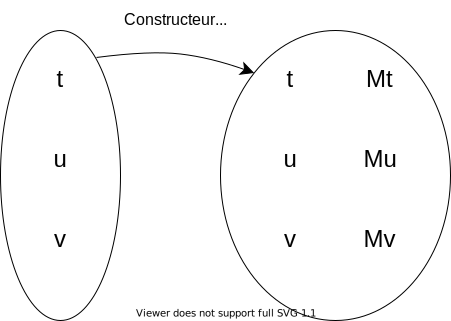

Définition
D'après Wikipedia :Une monade peut se voir comme la donnée d'un triplet constitué des trois éléments suivants :
-
un constructeur de type appelé type monadique, qui associe au type
tle typeMt. -
une fonction nommée unit ou return, qui construit à partir d'un élément de type sous-jacent
aun autre objet de type monadiqueMa.
Cette fonction est alors de signaturereturn: t → Mt -
une fonction bind, représentée par l'opérateur
≫=, associant à un type monadique et une fonction d'association un autre type monadique. Il permet de composer une fonction monadique à partir d'autres fonctions monadiques. Cet opérateur est de type≫=: Mt → (t → Mu) → Mu
Traduction : l'opérateur≫=prend en paramètre Mt et(t → Mu)et renvoieMu
d'un foncteur, t → Mt constructeur de type appelé type monadique
et de 2 transformations naturelles, return et bind.
On appelle Monade un triplet (t → Mt, return, bind).
Catégorie de Kleisli
La catégorie des fonctions monadiques est appelée catégorie de Kleisli.Une fonction monadique est une fonction qui renvoie un type monadique.
TODO verif définition - https://en.wikipedia.org/wiki/Monad_(functional_programming)
Dans cette catégorie,
- La flèche identité est la fonction unit.
- L'opérateur de composition est la fonction bind.
Le constructeur de type monadique
Voir la page sur les catégories, un constructeur est bien un foncteur. Constructeur pour chaque type de la cat de départ ? pas un constructeur au sens habituel où un seul type est construit ?
La fonction return
La fonction bind
Notation Haskell :
Avec notre manière habituelle d'écrire les fonctions :
Soit:
prend en paramètres :
et renvoie
≫=: Mt → (t → Mu) → Mu
Avec notre manière habituelle d'écrire les fonctions :
≫=( Mt, (t → Mu) ) = Mu≫=Mt(t → Mu)MuFROM OLD
Dans un langage fonctionnel pur, les effets de bords sont "emprisonnées" dans des monades.
Prenons deux fonctions pures,
f et g, qui transforment un float en float.
f : float -> float
g : float -> float
Pour débugger, on voudrait que chaque fonction, en plus de renvoyer un float, renvoie aussi un message.
Si on ne peut pas afficher à l'écran ou remplir un log global, on peut toujours construire deux fonctions qui renvoient un message (
string) en plus d'un float :
f' : float -> (float, string)
g' : float -> (float, string)
f'(x) = (f(x), "f a été appelée")
On voudrait en plus continuer à pouvoir composer nos fonctions.
Avec
f et g, pas de problème:
x --f--> y = f(x) --g--> z = g(y) = g(f(x)) = g o f (x)
| | |
float float float
Avec f' et g', on peut le faire aussi, en définissant par exemple:
g'(f'(x)) = ( g(f(x)), "message de f" + "message de g" )
(x, "")
|
f'
|
y = (f(x), "message de f")
|
g'
|
z = (g(y), "message de g")
= (g( (f(x), "message de f") ), "message de g")
= ( g(f(x)), "message de f" + "message de g" )
On réussit à composer f' et g', mais ça n'est pas pratique car chaque fois qu'on utilise f' ou g', on doit se préoccuper de la concaténation des messages.